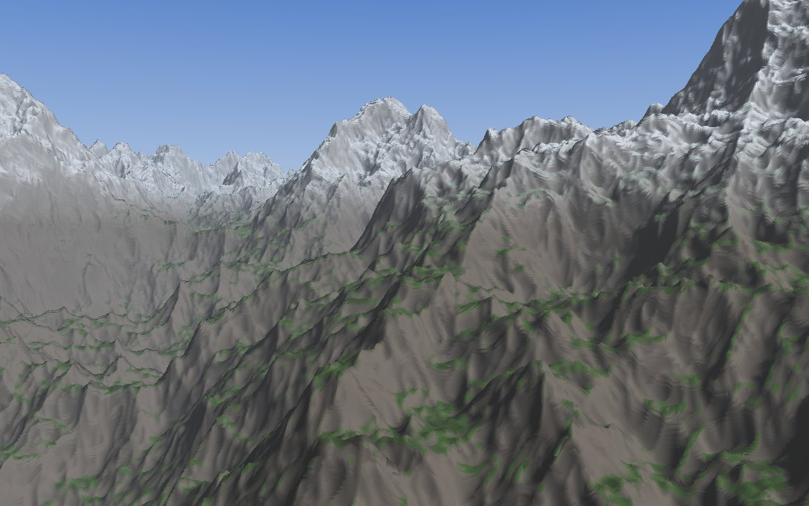

fractal_clouds · issue #147 · follow-up to the kernelimage field report
GPU Interpreter Trials
The field report parked pscat's GPU path because every kernel became its own huge shader that took seconds to minutes to compile. This page tests the alternatives it listed. One fixed shader that interprets the kernel removes the compile problem entirely. Compiling only the hot inner code natively brings back most of the speed.
2026-11-11 · Apple M4 (10-core GPU), macOS 15.7.7 · wgpu 30.0.1 / naga 30.0.1, pscat's versions · proof of concept in spikes/147-gpu-interp/
In short
The compile wall is real, and has a hard ceiling. A pscat-style straight-line shader of 64,000 instructions takes 4.2 s to compile cold. At 256,000 instructions, Metal's compiler crashes with an internal error. The gallery's smallest kernel (mountains) is 103,000 instructions, and the shared-subroutine scenes pass a million once inlined.
A fixed interpreter shader compiles in about 70–100 ms, whatever the kernel. The kernel becomes data in a buffer. Cached, the compile drops to half a millisecond.
Interpreting costs about 6–8× on the GPU. On a base M4, that puts a pure interpreter roughly level with pscat's CPU executor. It would make the GPU path work, but not make it faster.
Tiering gets most of it back: interpret the bulk and compile only the hot subroutine. The test frame drops from about 470 ms to 125 ms (native is 66–83 ms). The compiled part stays small enough to compile quickly.
f32 looks the same. GPU f32 against CPU f64 scores 59 dB on the test program, where fractal_clouds' "looks the same" bar is 40 dB.
Why the GPU path was parked
From the kernelimage field report (in the repo: docs/spikes/117-kernelimage/index.html). pscat's GPU preview lowers each compiled kernel to one WGSL shader, with every subroutine call inlined. For fractal_clouds' scenes, that runs into three walls:
Size. The inliner gives up past 220 instructions, and six of the eight scenes exceed it.
The Metal compile. Keeping subroutines as WGSL function calls instead made the compile run for more than ten minutes.
The WGSL parse. naga, the shader translator inside wgpu, spends 5–12 s parsing, and pays it again in every process. This repo renders one frame per process.
The CPU path had just become 22–77× faster than the interpreter, so the GPU was parked. The report listed six untried approaches, A to F. This page tests the ones that can be tested outside pscat.
What was built
A standalone Rust program, about 900 lines, using exactly pscat's wgpu and naga versions:
A bytecode. Each instruction is 16 bytes, [op, d, a, b], with an immediate bit on operands. That is the same layout as the compact form pscat's CPU executor now runs (#1101).
The fixed interpreter shader. About 3.7 KB of WGSL. Each GPU thread runs one pixel, with its own program counter and a small return stack for subroutine calls.
A synthetic terrain. A ridged-fbm height field ray-marched at world-scale coordinates, with the fbm as a called subroutine. It stands in for a gallery scene but isn't one: 270 instructions, about 6,000 run per pixel.
Three reference versions: the same program hand-written as native WGSL, a CPU interpreter in f64 and in f32, and a generator of pscat-shaped straight-line shaders for timing compiles against size.

The synthetic terrain, rendered by the fixed interpreter shader on the GPU in f32 at 1280×800. It is indistinguishable from the CPU's f64 render: PSNR 58.9 dB, 99.9% of channel values within 1 of 255.
Compile time
Cold pipeline creation, ms (linear scale; 96 registers)
Straight-line, 1,000 instr.
59
Straight-line, 4,000 instr.
143
Straight-line, 16,000 instr.
656
Straight-line, 64,000 instr.
4,186
Straight-line, 256,000 instr.
Metal compiler internal error
Fixed interpreter, any kernel size
69–103 (0.6 cached)
Bars are drawn to scale against 5,000 ms, with the value at the end of each row. The 256k bar marks a failure, not a time. Every cold compile used a new entry-point name, so Metal's shader cache couldn't help.
Two details matter for the other ideas:
The parse grows faster than the shader. From 16k to 64k instructions (4×), naga's WGSL parse grows 14×, from 125 ms to 1.75 s.
A Metal cache hit still pays the parse. Creating the same 64k shader a second time takes 1.8 s, nearly all of it parsing WGSL again. Handing wgpu a ready-made naga module instead (idea B) skips the parse: 4.19 s → 2.28 s cold.
Render time
Synthetic terrain, 1280×800, ms (linear scale)
Native shader (hand-written)
66–83
Tiered: interpreter + native fbm
125–129
Interpreter, 128 or 1,024 registers
425–497
Interpreter, 4,608 registers
737–831
Interpreter, threadgroup registers
1,590
CPU: scalar interpreter, f64, 10 threads
3,190–3,490
Bars are to scale: the CPU row's midpoint, 3,340 ms, is the full width, and every bar uses its range's midpoint. All GPU rows render the same picture to within 59 dB of the CPU's f64 render.
The interpreter's price is a constant factor. It runs about 6–8× slower than native code, because each thread decodes its own instruction stream and keeps its registers in memory.
Large register files cost about 1.6×. 4,608 registers is golden_coast's scale (4,402), and it still works, in either layout. Keeping registers in on-chip threadgroup memory was slower, because it limits how many threads a core can keep in flight.
The CPU row is not pscat. It is the proof of concept's own scalar interpreter. pscat's CPU executor batches 16 pixels per instruction and is several times faster. Per instruction run, the GPU interpreter (about 12–14 billion lane-instructions a second) is roughly level with what pscat's executor reached on mountains (about 12 billion). The instruction sets differ, so read that as "same ballpark".
The approaches, with what we now know
A. One fixed interpreter shader removes all three walls
The shader never changes, so its size limit, compile time and parse cost vanish. Kernel size becomes buffer size. On its own it is about as fast as pscat's CPU path on a base M4, so its value is to make large scenes run on the GPU at all, and to be the base for tiering.
A+. Tiered: interpret the bulk, compile the hot code new; the best result
New in this test. Pick the few subroutines where pixels spend their time (in fractal_clouds, the terrain and noise calls inside the ray-march loop) and compile only those as native GPU functions, called from the interpreter through one instruction. That shader stays small: 4,000 instructions compile in 0.14 s, 16,000 in 0.7 s. On the test frame it runs about 3.7× faster than pure interpretation and within 2× of a fully native shader.
That depends on how much of the work the compiled part carries. Here the native fbm took over about 86% of the instructions run (822 left per pixel, from 5,996). A scene whose time is spread thinly over many subroutines gains less. Measure each subroutine's share before choosing what to compile. The gallery's noise is currently PostScript code; pscat's native noise operators (fractal_clouds #16) would each become one native GPU function, the cheapest tiering there is.
B. Skip the WGSL text helps, not enough alone
wgpu's naga-ir feature accepts a shader module built in code, so pscat could build it straight from the kernel and skip the parse. That saves the parse share of the compile (about 45% of the cold compile at 64k instructions) and nearly all of a cached compile. It does nothing about Metal's crash on very large shaders.
C. Constants as a table small, cheap win
Read settings from a buffer instead of writing them into the shader text. A changed seed, colour or frame size then reuses the cached compile. Under A it comes free. A sketch is in samples/idea_c_constants.wgsl.
D. Start on the CPU, let the GPU join about 2× with A
The CPU starts at the top of the frame at once. The GPU starts at the bottom when its shader is ready, and they meet in the middle, so a slow or failed compile costs nothing. With a GPU interpreter as fast as the CPU, that is about twice as fast. GPU rows are f32 and CPU rows exact, so this has to be an opt-in. A sketch is in samples/idea_d_cpu_then_gpu.rs.
E, F. Wavefront passes; typed integers and a long-lived process not tested
Unchanged from the field report. Neither can be tested without pscat itself.
Recommendation
When the GPU work resumes, build A in pscat over the compact instruction form the CPU executor already uses. Try it first on mountains and storm, which are small and have no shared subroutines, and compare with the CPU executor's 8.2 s for mountains at 1280×800. Then add tiering (A+) for the hot shared subroutines, with B and C for whatever is still compiled.
Expect A alone to roughly match the CPU on this machine. The gain comes from A+, from D running both devices together, and from bigger GPUs.
Limits of this test
The program is synthetic and small. What transfers is the shape of the costs: the interpreter's flat compile time, and its constant slowdown per instruction run. Absolute numbers for real scenes have to be measured in pscat.
One machine, a base M4. GPUs with more cores widen the gap; the CPU path doesn't grow with them.
The 59 dB result is for this program. pscat kernels also carry integer and table paths, and f32 holds integers exactly only up to 224.
Files
docs/spikes/147-gpu-ideas/pscat-gpu.md: the same results as a hand-off for the pscat GPU session, mapped onto pscat's source files.
spikes/147-gpu-interp/: the proof of concept. sweep.sh reruns every measurement here, and sweep.log holds this run.
Upstream: PSCatLabs/pscat #742 (compiled kernels), #1065 (GPU preview), #1101 (the faster CPU executor).